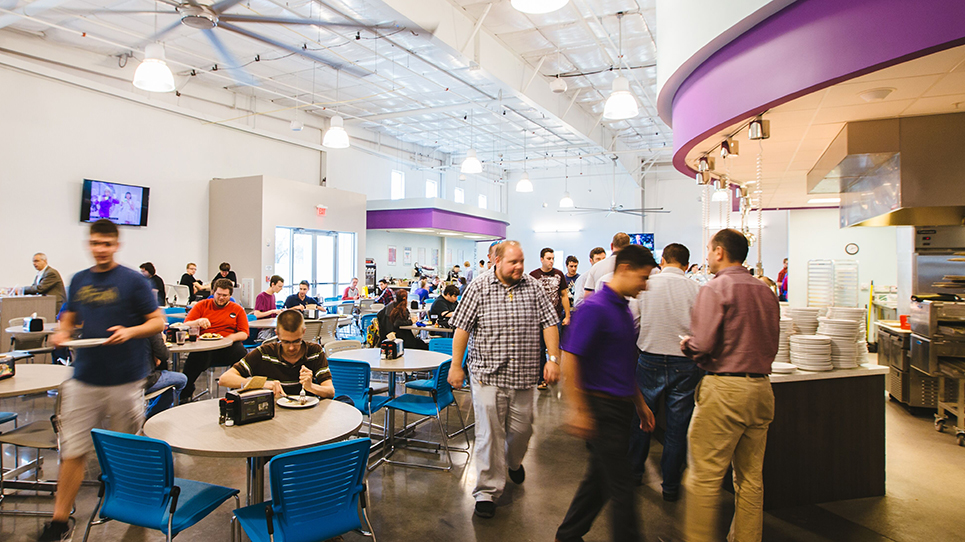

Dining Facilities
See what’s cooking
Innovation rules at Florida Polytechnic University – and that’s true of our dining services, too.
Our mission is to keep our students well-fueled with fresh and healthy meals and snacks that satisfy diverse preferences and busy schedules.
Our dining facilities offer delicious options for all tastes, from vegetarian to gluten-free, including a carving station for meat lovers, a grill for barbecue fans, and Starbucks to keep you going.
Fuel up at these facilities on campus:
- The Wellness Center Dining Hall all-you-can-eat food stations
- The Grill and Sub Connection in the Wellness Center
- Starbucks and Simply To Go convenience stores in the Wellness Center
- Starbucks and Simply To Go snacks at the Mosaic Café in the Innovation, Science, and Technology (IST) Building
Florida Poly Meal Plans offer the best dining values on campus - including our popular “unlimited seconds” feature.
Students are required to purchase a meal plan if they reside on campus. Learn more about Dining Services on our website.